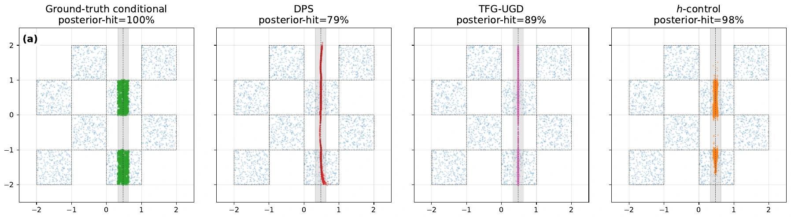
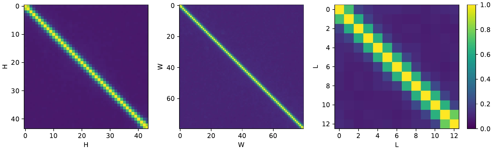
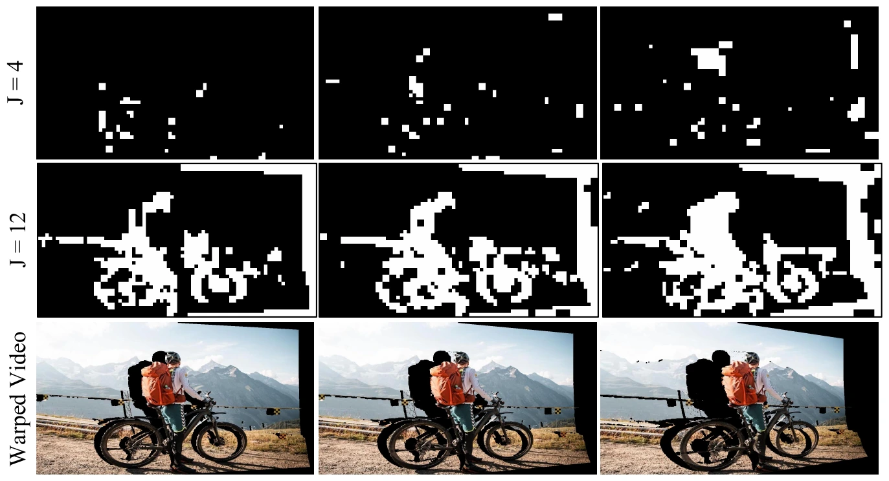
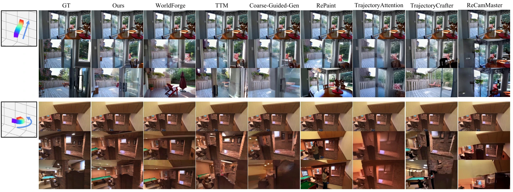
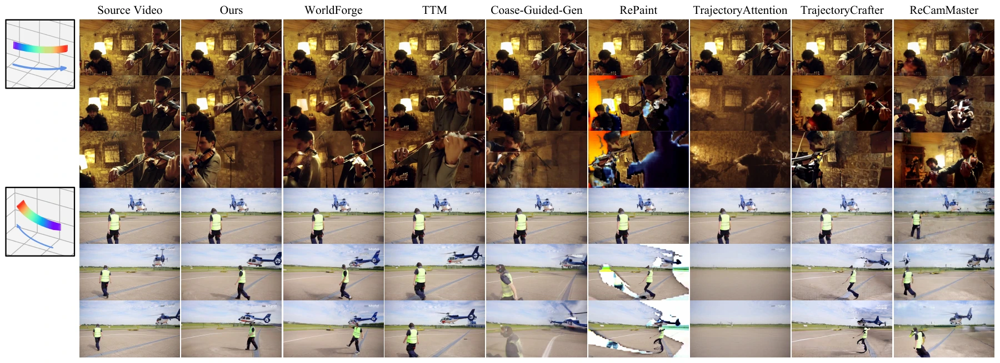

Anchor the observed regions
Lift the source into 3D and reproject it along the target camera trajectory. The warped video and visibility mask provide the observed latents for an outer hard-replacement step.
h-control
Steer the camera. Preserve the scene.
Refine a pretrained video model at inference time, with no fine-tuning.
Training-free camera control for pretrained flow-matching video generators is a partial-observation inverse problem: a depth-warped guidance video supplies noisy evidence on a subset of latent sites, which the sampler must reconcile with the pretrained prior. Existing methods struggle to balance trajectory adherence and visual quality, and heuristic guidance-strength tuning lacks robustness. We propose h-control, which augments each outer hard-replacement guidance step with an inner-loop block-conditional pseudo-Gibbs refinement on the unobserved complement at the same noise level. Under the paper’s stated assumptions, this chain converges to the partial-observation conditional data law. To make refinement practical at video scale, we exploit conditional locality, partition the unobserved complement into 3D patches, and adaptively freeze patches as they converge. On RealEstate10K and DAVIS, h-control achieves the best FVD among all eight evaluated methods and matches or improves on every training-free baseline across all reported metrics.
Keep the camera evidence fixed. Let the video prior refine what the camera reveals.
Lift the source into 3D and reproject it along the target camera trajectory. The warped video and visibility mask provide the observed latents for an outer hard-replacement step.
At the same noise level, perturb and re-denoise the unobserved complement while pinning the observed sites to their noised guidance. Average the inner iterates for a stable readout.
Track each 3D patch with a Δ-Welford mixing indicator. Freeze locally stable patches, continue refining the rest, and advance to the next outer denoising step.



Best FVD on both benchmarks, with no camera-conditioned fine-tuning.
| Method | FVD ↓ | ATE (cm) ↓ | RRE (deg) ↓ | RTE (cm) ↓ | LPIPS ↓ | SSIM ↑ | CLIP-f ↑ | CLIP-v ↑ |
|---|---|---|---|---|---|---|---|---|
| WorldForge | 158.47 | 5.8838 | 0.4373 | 1.4176 | 0.42 ± 0.20 | 0.56 ± 0.17 | 97.87 | 92.54 |
| TTM | 192.88 | 3.8700 | 0.4751 | 1.1745 | 0.48 ± 0.19 | 0.52 ± 0.17 | 98.16 | 93.39 |
| Coarse-Guided | 157.08 | 3.5719 | 0.4403 | 0.9535 | 0.42 ± 0.20 | 0.62 ± 0.18 | 97.84 | 91.60 |
| RePaint | 265.00 | 10.3861 | 0.7438 | 2.8434 | 0.52 ± 0.21 | 0.54 ± 0.17 | 97.66 | 90.13 |
| TrajectoryAttention† | 616.81 | 18.0606 | 0.8492 | 3.2817 | 0.45 ± 0.20 | 0.64 ± 0.16 | 97.10 | 87.23 |
| TrajectoryCrafter† | 253.27 | 4.1568 | 0.4235 | 0.9794 | 0.43 ± 0.17 | 0.63 ± 0.16 | 97.71 | 91.50 |
| ReCamMaster† | 299.33 | 5.1924 | 0.4627 | 1.6436 | 0.59 ± 0.15 | 0.53 ± 0.15 | 98.21 | 89.34 |
| h-control (Ours) | 129.25 | 3.4920 | 0.4321 | 0.9483 | 0.41 ± 0.18 | 0.62 ± 0.17 | 98.52 | 93.80 |
200 test scenes. Bold: best across all methods. †Training-based. All training-free methods use Wan 2.2 TI2V-5B. ATE / RRE / RTE measure camera trajectory error; ↓ lower is better, ↑ higher is better.
| Method | FVD ↓ | ATE (cm) ↓ | RRE (deg) ↓ | RTE (cm) ↓ | CLIP-f ↑ | CLIP-v ↑ |
|---|---|---|---|---|---|---|
| WorldForge | 383.53 | 8.2694 | 1.9323 | 5.1275 | 97.05 | 89.25 |
| TTM | 398.12 | 7.8849 | 1.9111 | 4.3735 | 97.35 | 89.85 |
| Coarse-Guided | 402.14 | 9.0672 | 2.1216 | 4.3978 | 96.40 | 87.35 |
| RePaint | 690.83 | 9.9780 | 2.2468 | 5.1842 | 95.33 | 74.76 |
| TrajectoryAttention† | 837.37 | 18.3749 | 3.6871 | 7.2034 | 93.88 | 74.23 |
| TrajectoryCrafter† | 576.30 | 7.3827 | 2.1045 | 4.7158 | 95.86 | 83.21 |
| ReCamMaster† | 670.42 | 4.9770 | 0.6352 | 1.7271 | 95.39 | 85.06 |
| h-control (Ours) | 356.73 | 6.8832 | 1.8907 | 4.2285 | 97.45 | 90.34 |
84 videos: three controlled camera trajectories on each of 28 dynamic scenes. Bold: best across all methods. †Training-based. ReCamMaster leads on trajectory error; h-control leads on FVD and both CLIP scores.
| Sampler configuration | FVD ↓ | ATE (cm) ↓ | CLIP-v ↑ |
|---|---|---|---|
| Outer guidance only | 392.13 | 7.9558 | 88.93 |
| + Pseudo-Gibbs refinement | 382.26 | 7.6343 | 89.71 |
| + Refinement + Polyak readout | 375.67 | 7.6051 | 89.49 |
| + Refinement + patch-freeze gate | 382.26 | 7.8734 | 89.62 |
| Full h-control | 356.73 | 6.8832 | 90.34 |
Selected metrics from the DAVIS ablation. Averaging and adaptive patch freezing work together: the full sampler gives the strongest result on all three metrics shown.
Explore camera control in static and dynamic scenes. Choose a scene and a baseline to compare the videos side by side.
RealEstate10K · static scene
RealEstate10K reference: held-out video along the target camera trajectory. Clips are cropped from the supplementary comparison grids; all methods retain their original timing.


Current limitation. Camera accuracy depends on the depth-warped guidance. Severe depth errors can produce an incorrect camera path even when the generated video remains visually plausible.
If you find this work useful, please cite:
@inproceedings{wang2026hcontrol,
title = {h-control: Training-Free Camera Control via Block-Conditional Gibbs Refinement},
author = {Wang, Yuzhu and Ye, Xi and Su, Duo and Xu, Yangyang and Zhu, Jun},
booktitle = {Advances in Neural Information Processing Systems (NeurIPS)},
year = {2026},
url = {https://arxiv.org/abs/2605.11871}
}